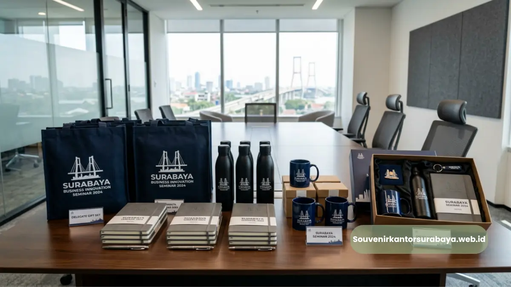
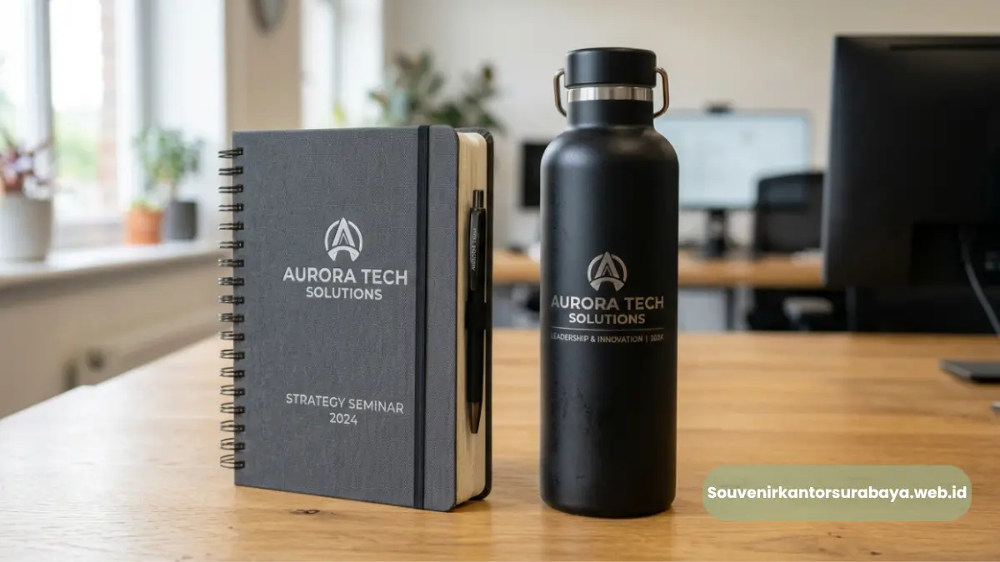

- Apa Itu Souvenir untuk Seminar dan Mengapa Penting bagi Perusahaan?
- Mengapa Souvenir Seminar Berperan dalam Membangun Loyalitas Peserta?
- Jenis Souvenir untuk Seminar Surabaya yang Paling Diminati Perusahaan
- Bagaimana Souvenir Seminar Bisa Dicustom dengan Logo Perusahaan?
- Berapa Lama Proses Custom Logo Souvenir Seminar?
- Faktor yang Perlu Dipertimbangkan Sebelum Memilih Souvenir Seminar
- Kesalahan Umum dalam Memilih Souvenir Seminar Korporat
Souvenir untuk Seminar Surabaya yang Perkuat Branding Bisnis
Souvenir untuk seminar Surabaya adalah merchandise korporat yang dibagikan kepada peserta seminar sebagai bentuk apresiasi sekaligus media branding perusahaan.
Item ini umumnya berupa alat tulis, tumbler, tas seminar, atau flashdisk yang dicetak logo.
Souvenir yang tepat mampu meningkatkan kesan profesional acara sekaligus memperpanjang exposure merek setelah seminar berakhir.
- Souvenir seminar berfungsi ganda: apresiasi peserta dan media branding jangka panjang.
- Jenis souvenir populer di Surabaya mencakup alat tulis, seminar kit, tumbler, dan flashdisk custom logo.
- Pemilihan souvenir sebaiknya mempertimbangkan relevansi, kualitas, dan konsistensi identitas visual perusahaan.
- Souvenir custom logo membantu perusahaan tampil lebih kredibel di mata klien dan mitra bisnis.
- souvenirkantorsurabaya.web.id menyediakan pilihan souvenir seminar siap pesan dengan proses cetak logo cepat.
Apa Itu Souvenir untuk Seminar dan Mengapa Penting bagi Perusahaan?
Souvenir untuk seminar adalah barang yang diberikan kepada peserta sebagai kenang-kenangan sekaligus alat promosi tidak langsung.
Kehadiran souvenir dalam sebuah seminar korporat bukan sekadar formalitas, melainkan bagian dari strategi komunikasi merek.
Setiap kali peserta menggunakan barang tersebut di kemudian hari, nama dan logo perusahaan kembali terlihat oleh orang di sekitarnya.
Bagi perusahaan yang rutin mengadakan seminar, workshop, atau pelatihan internal, souvenir yang konsisten dari segi desain dan kualitas turut membangun citra profesional.
Peserta cenderung mengingat perusahaan penyelenggara lebih lama ketika souvenir yang diterima terasa bermanfaat dan tidak sekadar pajangan.
Mengapa Souvenir Seminar Berperan dalam Membangun Loyalitas Peserta?
Souvenir yang relevan dengan kebutuhan peserta seminar, seperti notes atau tumbler, cenderung lebih sering digunakan sehari-hari.
Penggunaan berulang inilah yang menciptakan efek repetisi merek secara organik tanpa biaya iklan tambahan.
Semakin sering nama perusahaan terlihat, semakin kuat pula posisi merek di benak audiens.
Jenis Souvenir untuk Seminar Surabaya yang Paling Diminati Perusahaan
Ada beberapa kategori souvenir yang secara umum banyak dipilih perusahaan di Surabaya untuk keperluan seminar dan acara korporat serupa.
Alat Tulis dan Notes Custom Logo
Notebook, pulpen, dan block note masih menjadi pilihan klasik karena fungsional dan mudah dibawa peserta.
Item ini cocok untuk seminar bertema edukasi atau pelatihan yang membutuhkan catatan aktif dari peserta.
Tumbler dan Botol Minum Korporat
Tumbler custom logo menjadi favorit karena dipakai berulang di lingkungan kerja maupun luar kantor. Barang ini memberikan visibilitas merek jangka panjang dibandingkan souvenir sekali pakai.
Tas Seminar dan Goodie Bag
Tas seminar berfungsi sebagai wadah materi acara sekaligus media branding yang terlihat sejak awal peserta memasuki ruangan. Desain tas yang rapi turut mencerminkan standar penyelenggaraan seminar.
Flashdisk dan Perangkat Digital Custom Logo
Untuk seminar yang melibatkan materi presentasi atau modul digital, flashdisk custom logo menjadi pilihan praktis sekaligus bernilai guna tinggi bagi peserta.
Bagaimana Souvenir Seminar Bisa Dicustom dengan Logo Perusahaan?
Proses customisasi logo pada souvenir umumnya melalui teknik cetak seperti sablon, bordir, laser engraving, atau UV printing, tergantung jenis material barang.
Logo perusahaan biasanya ditempatkan di posisi yang mudah terlihat namun tetap proporsional dengan desain produk secara keseluruhan.
Perusahaan yang ingin memastikan hasil cetak sesuai identitas visual biasanya perlu menyiapkan file logo beresolusi tinggi serta menentukan warna korporat (brand color) agar hasil akhir konsisten dengan materi promosi lain.
Berapa Lama Proses Custom Logo Souvenir Seminar?
Durasi pengerjaan custom logo dapat bervariasi tergantung jumlah pesanan, jenis material, dan teknik cetak yang digunakan.
Pemesanan lebih awal sebelum tanggal seminar sangat disarankan agar proses produksi berjalan tanpa terburu-buru.

Proses custom logo pada souvenir seminar dilakukan dengan presisi tinggi untuk memastikan hasil yang rapi dan profesional.
Faktor yang Perlu Dipertimbangkan Sebelum Memilih Souvenir Seminar
Beberapa faktor berikut umumnya menjadi pertimbangan panitia sebelum menentukan souvenir seminar yang akan digunakan.
- Relevansi dengan tema acara — souvenir sebaiknya selaras dengan konteks seminar, misalnya alat tulis untuk seminar edukasi atau tumbler untuk seminar kesehatan.
- Kualitas material — souvenir berbahan baik mencerminkan standar perusahaan dan lebih tahan lama digunakan peserta.
- Anggaran acara — penyesuaian jenis souvenir dengan budget membantu efisiensi tanpa mengurangi kesan profesional.
- Kapasitas produksi — memastikan jumlah souvenir yang dibutuhkan dapat diproduksi tepat waktu sebelum hari pelaksanaan.
Kesalahan Umum dalam Memilih Souvenir Seminar Korporat
Beberapa kesalahan yang sering terjadi antara lain memilih souvenir tanpa mempertimbangkan fungsi jangka panjang, mengabaikan konsistensi warna logo, serta memesan mendekati hari-H sehingga waktu produksi menjadi terbatas.
Kesalahan lain adalah tidak menyesuaikan jenis souvenir dengan profil peserta, misalnya memberikan barang yang kurang relevan dengan kebutuhan audiens korporat.
Souvenir untuk Seminar Surabaya di souvenirkantorsurabaya.web.id
Bagi perusahaan atau panitia seminar yang membutuhkan souvenir dengan proses custom logo yang rapi dan tepat waktu, souvenirkantorsurabaya.web.id menghadirkan berbagai pilihan souvenir seminar siap pesan untuk kebutuhan korporat di Surabaya.
Mulai dari alat tulis, tumbler, tas seminar, hingga flashdisk custom logo dapat disesuaikan dengan identitas visual perusahaan Anda.
Kunjungi souvenirkantorsurabaya.web.id untuk berkonsultasi mengenai jenis souvenir yang paling sesuai dengan tema seminar Anda.
Souvenir untuk seminar Surabaya berperan penting sebagai media apresiasi sekaligus branding jangka panjang bagi perusahaan.
Pemilihan jenis souvenir yang relevan, berkualitas, dan dicustom dengan logo yang konsisten akan memperkuat kesan profesional acara.
Segera konsultasikan kebutuhan souvenir seminar Anda melalui souvenirkantorsurabaya.web.id agar proses pemesanan dan produksi berjalan tepat waktu sebelum hari pelaksanaan.

Hawa Nadira
Tim penulis CorporateGifts ID berfokus pada strategi souvenir kantor, merchandise korporat, dan inovasi brand untuk klien B2B.
Keahlian: Branding perusahaan, produksi souvenir, paket event, desain materi promosi.
Artikel Terkait

Souvenir Kantor untuk Event Korporat Surabaya yang Elegan dan Siap Pakai
Souvenir kantor untuk event korporat Surabaya adalah merchandise yang disiapkan khusus untuk mendukung acara bisnis seperti seminar dan gathering.
Baca SelengkapnyaPanduan Memilih Seminar Kit Premium
Temukan cara memilih seminar kit premium yang mendukung tujuan acara, meningkatkan profesionalisme, dan memberikan nilai tambah bagi peserta.
Baca SelengkapnyaSouvenir Kantor Custom Logo Surabaya untuk Memperkuat Identitas Brand
Custom logo pada souvenir kantor menjadi salah satu cara paling efektif untuk memperluas eksposur brand secara berkelanjutan.
Baca Selengkapnya